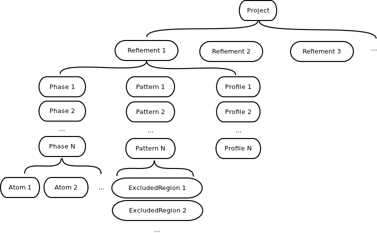

This part contains the introduction to the scripting interface of SrRietveld. The full API documents for SrRietveld scripts can be found in here.
Currently the scripting interface is mostly useful to analyze a completed project. The result data can be easily retrieved and plotted. Also, the data objects in the project can be converted to a data list, which can be used in further analysis, or other modules.
After the all refinements in a SrRietveld project are complete, the data are saved into a project file, which is actually an HDF5 binary data file. With the scripting interface, users can walk through the structure and obtain the certain result data.
The data are stored in Datasets, a Dataset is a Python wrapper class over the HDF5 data node. The Dataset usually contains a list of values, which represent the list of single refinement in the project. The Dataset has an interface similar to a list in Python. For example, in the example project file NaCl.srr, user can access the chi2 value of the GSAS refinement on the first single run, as bellow:
>>>from diffpy.srrietveld.project import Project
>>>proj = Project('NaCl.srr')
>>>gsas_refinement = proj.listRefinements()[0]
>>>chi2 = gsas_refinement.getChi2()
>>>chi2
<diffpy.refinementdata.hdf5.dataset.Dataset object at 0x365a110>
>>>chi2[0]
2.5699999999999998
The Datasets are organized in different Objects. The Object in the project can contain Datasets or other Objects. The structure of a project is illustrated in the following scheme

The scheme for project data structure
The scripting interface provides convenient access functions to retrieve the Datasets and Objects saved in a Project file. The SrRietveld scripting interface API document contains detailed instructions on these access functions. Some commonly used functions are summarized as follows.
The API doc for Project class can be found here.
To create a Project instance, import and initialize the Project class:
>>>from diffpy.srrietveld.project import Project
>>>proj = Project('NaCl.srr')
The API doc for Refinement class can be found here.
The Refinement objects can be listed under Project:
>>>proj.listRefinements()
[<diffpy.srrietveld.refinement.Refinement object at 0x2e05a90>, <diffpy.srrietveld.refinement.Refinement object at 0x2e05dd0>]
To list the names and get a specific refinement by its name:
>>>proj.listRefinementNames()
['NACL_EXP', 'NaCl_pcr']
>>>gsas_refinement = proj.getRefinementByName('NACL_EXP')
<diffpy.srrietveld.refinement.Refinement object at 0x2e05a90>
Now a GSAS type refinement object is obtained from the project. Users can get the data by its access functions:
>>>gsas_refinement.getName()
'NACL_EXP'
>>>gsas.refinement.getNumOfCycles()
<diffpy.refinementdata.hdf5.dataset.Dataset object at 0x365a390>
>>>chi2 = gsas_refinement.getChi2()
>>>chi2[300]
4.5919999999999996
Similarly, the Phase, Pattern, and Profile objects can be listed under Refinement:
>>>gsas_refinement.listPhases()
[<diffpy.srrietveld.phase.Phase object at 0x2e20190>]
>>>gsas_refinement.listPhaseNames()
['NaCl']
>>>gsas_refinement.listPatterns()
[<diffpy.srrietveld.pattern.Pattern object at 0x2e108d0>]
>>>gsas_refinement.listProfiles()
[<diffpy.srrietveld.profile.Profile object at 0x2e10310>]
The API doc for Phase class can be found here.
The Phase object contains the lattice parameters and the Atom objects:
>>>phase = gsas_refinement.getPhaseByName('NaCl')
>>>phase.getLatticeA()
<diffpy.refinementdata.hdf5.dataset.Dataset object at 0x365a550>
>>>max(phase.getLatticeA())
5.6840650000000004
Note
Dataset objects have the *[]* operators reloaded and a generic interface similar to the built in list type. The values in Dataset represent the values in the series of single refinement. And this Dataset object can be directly passed into functions which accept a list.
The API doc for Atom class can be found here.
The Atom objects are listed under Phase:
>>>phase.listAtomNames()
['NA1', 'CL2']
>>>na = phase.getAtomByName('NA1')
>>>na.getUiso()
<diffpy.refinementdata.hdf5.dataset.Dataset object at 0x365a750>
>>>na.getBiso()
<diffpy.refinementdata.hdf5.dataset.Dataset object at 0x365a810>
Note
In GSAS refinement, the Biso values are calculated from Uiso values and stored in the project file. Users can directly access to the Biso values under Atom. Similarly in FullProf, the Uiso values are calculated from Biso values.
The API doc for Pattern class can be found here. The API doc for ExcludedRegion class can be found here.
The Pattern object contains the histogram data and the background coefficients:
>>>gsas_refinement.listPatterns()
[<diffpy.srrietveld.pattern.Pattern object at 0x2e108d0>]
>>>pattern = gsas_refinement.listPatterns()[0]
>>>pattern.getBackgroundCoefficients()[319]
array([ 1941.42, 1773.07, 1818.96, 1640.05, 1365.27, 1141.02])
>>>pattern.listExcludedRegions()[0].getEnd()[319]
1000.0
Note
The getBackgroundCoefficients function will return a multi-dimension arrays. The first dimension is the length of single refinements. The second dimension is the number of the coefficients, which can be obtained from the function getNumOfBackgroundCoefficients under Pattern object.
The API doc for Profile class can be found here.
The Profile object contains the profile function applied to the pattern:
>>>profile = gsas_refinement.listProfiles()[0]
>>>profile.getProfileType()
2
>>>profile.listCoefficientNames()
['GU', 'GV', 'GW', 'LX', 'LY', 'trns', 'asym', 'shft', 'GP', 'stec', 'ptec', 'sfec', 'L11', 'L22', 'L33', 'L12', 'L13', 'L23']
Note
The scripts have same interfaces despite of differences in engine types. Though the returned values may have different meanings. For example, the profile and background function type identification numbers are different in GSAS and FullProf. Users have to refer to the manuals for details.
Users can plot the Dataset directly by using the plot member function under Project (API doc <http://www.diffpy.org/doc/srrietveld/api/diffpy.srrietveld.project.Project-class.html#plot>_):
>>>a = phase.getLatticeA()
>>>b = phase.getLatticeB()
>>>temperature = gsas_refinement.get('T')
>>>from diffpy.refinementdata.plot import backend
>>>backend.use('wx')
>>>proj.plot([a, b], temperature)
Also, users can convert the Dataset object into list, and plot the data with other visualization packages such as matplotlib.
The Dataset objects can be easily converted to list or numpy.array objects, which can be readily imported to other models:
>>>chi2 = gsas_refinement.getChi2()
>>>chi2_list = list(chi2)
>>>from numpy import array
>>>chi2_array = array(chi2_list)
An example is introduced below to show the usage of the scripting interface. The NaCl.srr project data file is read into Python. The lattice parameter a values from GSAS and FullProf engines are plotted and compared. The Uiso values of Na, Cl atoms, from both GSAS and FullProf engines are plotted. Also, the Uiso values in temperature series are fitted with Debye model. The whole script is in the example folder, and also can be found in the SVN repository.
{kind=link}